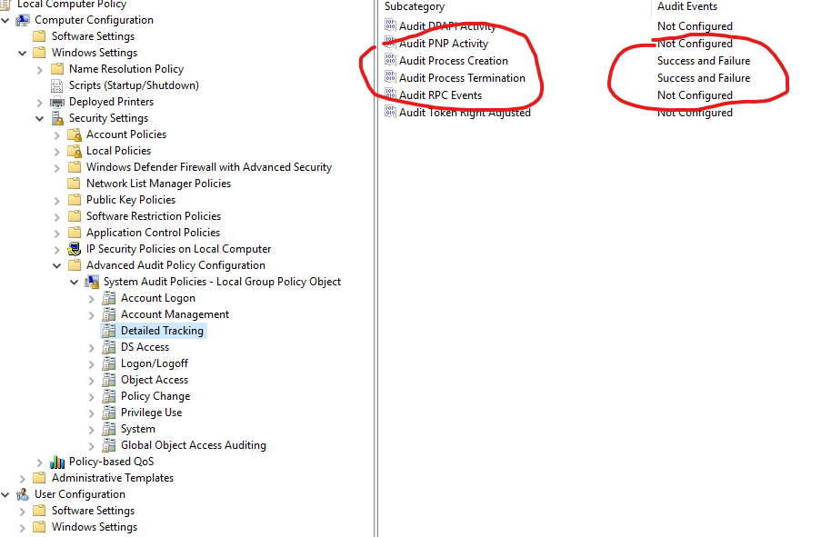
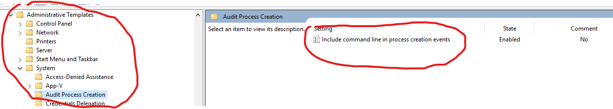

Windows Event Logging
Enable Process Auditing
To enable proceess auditing (advanced audit) you need to set the following policy

To enabled commandline logging along with this do the following.

You should now have events * "4688" Process Creation * "4689" Process Termination
Example
- <Event xmlns="http://schemas.microsoft.com/win/2004/08/events/event">
- <System>
<Provider Name="Microsoft-Windows-Security-Auditing" Guid="{54849625-5478-4994-a5ba-3e3b0328c30d}" />
<EventID>4688</EventID>
<Version>2</Version>
<Level>0</Level>
<Task>13312</Task>
<Opcode>0</Opcode>
<Keywords>0x8020000000000000</Keywords>
<TimeCreated SystemTime="2021-03-20T17:23:35.334603100Z" />
<EventRecordID>18980</EventRecordID>
<Correlation />
<Execution ProcessID="4" ThreadID="248" />
<Channel>Security</Channel>
<Computer>WIN-NDA8UIVGAA8</Computer>
<Security />
</System>
- <EventData>
<Data Name="SubjectUserSid">S-1-5-21-108682653-446161091-3115200861-500</Data>
<Data Name="SubjectUserName">Administrator</Data>
<Data Name="SubjectDomainName">WIN-NDA8UIVGAA8</Data>
<Data Name="SubjectLogonId">0x51865</Data>
<Data Name="NewProcessId">0x1320</Data>
<Data Name="NewProcessName">C:\Windows\System32\mmc.exe</Data>
<Data Name="TokenElevationType">%%1936</Data>
<Data Name="ProcessId">0xeb4</Data>
<Data Name="CommandLine">"C:\Windows\system32\mmc.exe" C:\Windows\system32\gpedit.msc</Data>
<Data Name="TargetUserSid">S-1-0-0</Data>
<Data Name="TargetUserName">-</Data>
<Data Name="TargetDomainName">-</Data>
<Data Name="TargetLogonId">0x0</Data>
<Data Name="ParentProcessName">C:\Windows\explorer.exe</Data>
<Data Name="MandatoryLabel">S-1-16-12288</Data>
</EventData>
</Event>